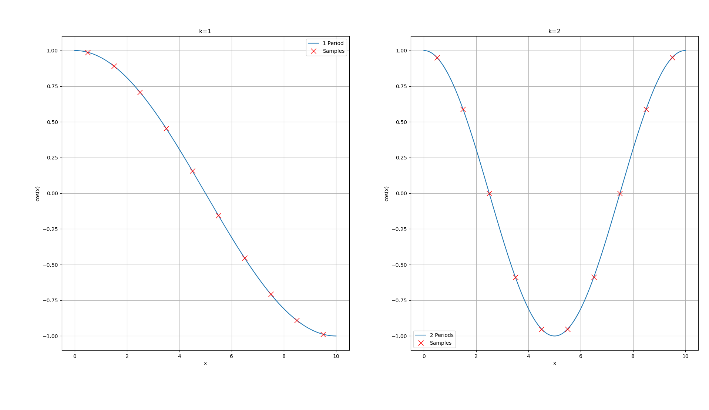
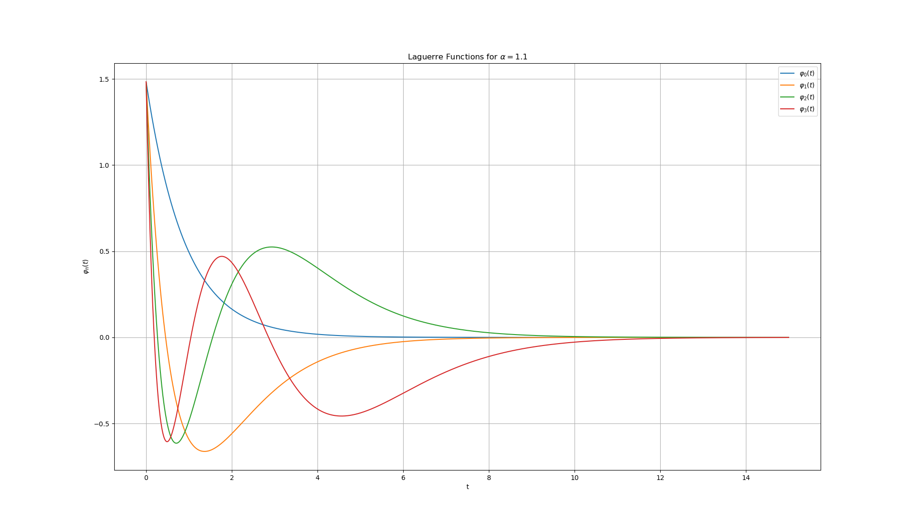
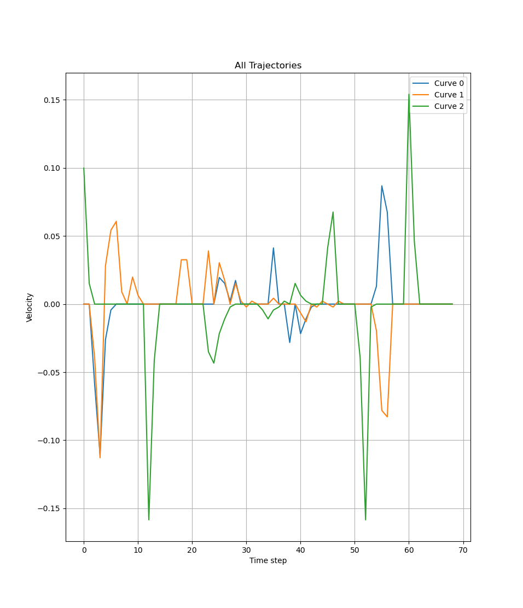
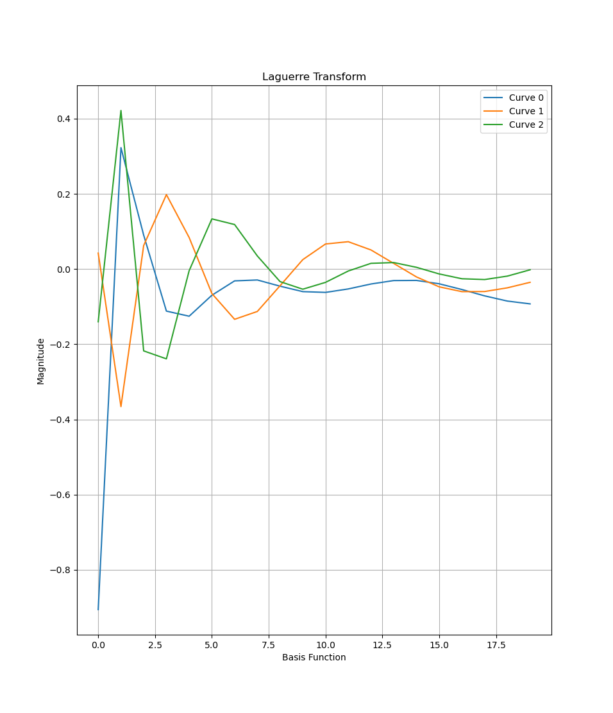

I was recently reading about Physical Intelligence’s new-ish FAST tokenizer. Formally, tokenizing an action looks like taking in a multidimensional fixed-length trajectory $\tau^{(i)} \in \mathbb{R}^D$, where $i$ is a timestep indexer and $D$ is the dimensionality of your space, and outputting a sequence of tokens whose length will almost always scale linearly with the length of the input. As an aside: you might choose to tokenize actions in joint space, which is more natural to control in, but it’s extremely common in generalist models like the ones Physical Intelligence is working on to work in a “task space” (read: Cartesian space) and handle robot morphology with traditional controls.
The trick of FAST is to take the multidimensional Discrete Cosine Transform (DCT) of the trajectory, round it, and do byte-pair encoding on the resulting sequence. When I first read the post and paper, my first thought was “why not fit a cubic curve to each trajectory and use the coefficients of that instead of your DCT coefficients?” For all I know, this might work! But in this post, I’ll talk a bit about why the DCT idea is actually more elegant. First, we’ll derive a DCT!
Derivations
I’m going to explain how to derive the DCT under the assumption that you have some idea of what a DFT (Discrete Fourier Transform) is, without actually relying on the DFT. If you have no idea what a DFT is, there are lots of great resources out there. I also talk about it a little bit in one of my reviews of Steve Brunton’s textbook, on Fourier and Wavelet Transforms, but only very briefly.
The DCT is in a class of transforms called “frequency domain transforms.” They sound scary but are, in fact, harmless. There are two ways to think about the DCT, the normal way and my way. The normal way is a lot more elegant; my way works for me.
Aside: Variations of the DCT, and DCT vs DFT
The DCT is extremely similar to the DFT. In fact, the DCT is identical to the DFT of a signal, if you repeat mirrored versions of that signal enough times before taking the DFT (neither one typically scales out the number of samples, so this is actually only true up to a scale factor). The key difference between the DCT and the DFT is in the boundary conditions. The DFT is derived from the normal Fourier transform, which assumes an infinitely long signal. The DFT assumes a periodic signal as a way of getting around this, so if it sees the signal
$$x = [1,2,3,4,5]$$ It treats that sequence like the next number is going to be 1 (the signal repeats). This is physically unrealistic for signals like the motion of a robotic arm! It is extremely unlikely that after driving from 1 to 5, the robot will dramatically accelerate in the opposite direction. If it has to reverse direction, the best guess is that it will first stop, then retrace its steps. The DCT assumes exactly this: mathematically, that the signal will have an even symmetry, or that it will mirror itself. There are two ways this might happen:
$$1,2,3,4,5\dots4,3,2,1\ \texttt{or}\ 1,2,3,4,5\dots5,4,3,2,1$$ In other words, the last number might repeat itself, or not. Except actually, the first number might also repeat itself, or not, independently of the last number ($3,2,1\dots2,3$, etc). So there are a total of four different types of DCT, which are all helpfully numbered in extremely forgettable ways. The most common variant is not, as you would expect, the DCT-1, but the DCT-2. The DCT-2 assumes that the numbers will repeat themselves on both sides. This is equivalent, for a robot trajectory, to the assumption that the robot will stop and then go back the way it came.
$$1,2,3 \dots 3,2,1 \dots 1,2,3\dots$$
I will do my best to write the rest of this post in such a way that you can forget the fact that there are multiple versions of the DCT. Note from future Sam: this did not work out.
The Normal Way
In the normal way, we conceptualize the DCT as doing what the DFT does: pulling out the most prominent frequencies in a signal. It does this through a clever mathematical trick, which is that for any pair of integers $j$ and $k$:
$$ \begin{align} &\int_0^{2\pi} \cos(kx) \cos(jx) dx \\ = &\int_0^{2\pi} \cos((k-j)x) + \cos((k+j)x) dx \\ = &\left[ \dfrac{1}{k-j} \sin((k-j)x) + \dfrac{1}{j+k}\sin((k+j)x) \right]_0^{2\pi} \end{align} $$
When $k=j$ here, the last line cannot be solved because of division by 0, but we can rewrite the second-to-last line as $\int_0^{2\pi} 1 + \cos((k+j)x) dx$ and solve that to get a final solution of $2\pi$. For all $k \neq j$, the last line evaluates to 0 (integrating a sine wave over an integer number of periods). You might remember an almost identical integral from when I wrote about the Fourier transform (actually, the Fourier integral is even simpler, and works for non-integer $j$ and $k$, but it produces a complex output that we don’t want here).
More generally, if we have a function $g(x) = \cos(k_1 x) + \cos(k_2 x) + \dots$, and we integrate $g(x)\cos(jx)$ over 0 to $2\pi$, we will get 0, unless one or more of $k_i = j$.
So if we have a discrete signal $g[n]$ of length $N$, we can use this orthogonality to cleverly extract the frequencies from it, because:
$$\sum_{n=0}^{N-1} g[n] \cos(k \frac{2 \pi n}{N})$$ Is an approximation of the integral we were looking at before. So we can check various multiples of the fundamental frequency of the signal (a fancy way of saying we can check frequencies which will complete integer numbers of periods in the number of samples in g). And in fact, the integral didn’t just come out to a nonzero number for $j=k$, it came out to a constant number, meaning that the amplitude of $2 \pi k$ in $g$ is equal to that summation, up to a constant factor!
The last thing we have to do is a little fix to respect the boundary conditions for the Type II DCT, which we mentioned earlier.
The summation above samples like this (pictured are $k=1$ and $k=2$, for 1 and 2 periods per sample), where each ‘x’ marks a place where $g[n]$ is multiplied against the cosine wave:
 These samples don’t match our boundary conditions! The next sample will be at $g[10]$, which will have a different value from $g[9]$ (it will have the same value as $g[0]$, meaning that $g$ will repeat itself like the DFT). But we said we wanted the transform to behave like $x$ was even and symmetric, where we get something like $g[8], g[9], g[9], g[8],g[7], \dots$
These samples don’t match our boundary conditions! The next sample will be at $g[10]$, which will have a different value from $g[9]$ (it will have the same value as $g[0]$, meaning that $g$ will repeat itself like the DFT). But we said we wanted the transform to behave like $x$ was even and symmetric, where we get something like $g[8], g[9], g[9], g[8],g[7], \dots$
To do this, we will use two tricks. The first trick is to apply a phase shift of half a sample to the cosine wave. For instance, for $g[0]$ we would actually sample the cosine wave at $n = 0.5$. This half-sample shift means that the last sample of our data would be taken at $n = N - 0.5$ instead of at $n = N - 1$, and the next sample, incrementing $n$ by 1, would be taken at $n = N + 0.5$. This centers a multiple of $\pi$ between the last sample of our actual signal and the first sample of our virtual, mirrored signal. Since $\cos(a \pi + \phi) = \cos(a \pi - \phi)$ for all integer values of $a$ and the argument of the cosine function is an integer multiple of $\pi$ when $n=N$, all cosine functions in the sum will have the same value for both $N + 0.5$ and $N - 0.5$ and $g[9]$ will be reproduced twice as required by the boundary conditions.
Now the transform will work as expected across the reflection point, and we could (to a constant factor, because the DCT is not typically normalized) add in the reflected array and compute:
$$\sum_{n=0}^{2N-1} h[n] \cos \left( \dfrac{2 \pi (n+0.5) k}{2N} \right)$$
Where $h[n]$ is $g[n]$ with a reflection, having length $2N$. However, we can also save ourselves some work! Since both $h[n]$ and the cosine function are even and symmetric about $n=N$, we can use our second trick: only sample half a period of the cosine instead of the whole thing, and throw out. We will get exactly half the result of the full sum involving $h[n]$, but the phrase ‘up to a constant factor’ appears quite a lot when you’re talking about the DCT. So the final and actual form of the DCT is:
$$\sum_{n=0}^{N-1} g[n] \cos \left( \dfrac{\pi (n+0.5) k}{N} \right)$$ And visually, the sampling looks like this:

My Way
For the purpose of understanding how the DCT is built, you don’t really have to think about ideas like “pulling the frequencies out of a signal.” Very often, we don’t even care about the frequencies, we just want to project a curve into a coordinate space where we can easily sparsify it. It’s easiest to project into orthogonal coordinate spaces because you can project into each dimension independently. From a perspective of function spaces, if we have a space and a vector
$$F = \begin{bmatrix} a(x[1]) & b(x[1]) & c(x[1]) & \dots \\ a(x[2]) & b(x[2]) & c(x[2]) & \dots \\ a(x[3]) & b(x[3]) & c(x[3]) & \dots \\ \end{bmatrix}, G = \begin{bmatrix} g(x[1]) & g(x[2]]) & g(x[3]) \end{bmatrix} $$
If the functions $a$, $b$, and $c$ are orthogonal, then $F$ is an orthogonal basis, and $(F^T F)_{(i, j)} = <f_i, f_j>$ (switching here from $a, b, c$ to $f_1, f_2, f_3$ for readability), so the full matrix is just the diagonal:
$$F^T F = \begin{bmatrix} <f_1, f_{1}> & 0 & 0 \\ 0 &<f_2, f_{2}> & 0 \\ 0 & 0 & <f_3, f_{3}> \\ \end{bmatrix} $$ If you also have the property that those inner products all evaluate to the same constant, then the $G F F^T = kG$ for a constant $k$. The choice of $cos(kx)$ for our basis library is just a convenient orthonormal basis; the shift by half a sample and halving of the period are interesting tricks that make this particular basis more compelling.
A Humble Proposal
One thing I like about my way of thinking about the DCT is that it makes it more clear to me how many options there are for bases. For example, if your actions were trajectories in a velocity space instead of physical space, you could use (checks ChatGPT) Laguerre polynomials, which also constitute an orthonormal basis but might admit an even sparser representation because they encode the assumption that the robot will stop at the end of its action (if actions are defined in short time horizons, this actually might not be true! I did not try to tokenize actions using Laguerre polynomials and don’t actually know if it’s better!). Here’s a pretty chart showing the first four Laguerre polynomials:
 In fact, you don’t even need an orthogonal basis! There’s no law stopping you from projecting into any (full-rank) function space you want; you just need to invert a matrix to project back into the original space. It’s not a terribly expensive thing to do for a 10x10 matrix, or even a 50x50 matrix - especially since you only have to do it once and can reuse the inverted matrix for future actions!
To get a sense of whether this might work, I downloaded a couple of examples from Open X-Embodiment to get a sense for how robot trajectories actually look, and over about 15 timesteps here’s a fairly representative example of the velocity trajectories in the x, y, and z directions:
 Even just by inspection, it’s obvious that this signal will not have a sparse DCT representation, so I switched back to the spatial version, which is much smoother. Sure enough, the first 50 steps probably had about 15 large coefficients. The Laguerre transform actually performed substantially better at reconstruction without sparsification, but also with sparsification (of taking the 10 highest-magnitude coefficients), meaning that it is better than the DCT at compressing robot trajectories! I was pretty surprised by this! Here’s a plot showing the Laguerre transform with 20 coefficients for one of the trajectories:
 In a sample of 118 trajectories taken from Open X-Embodiment, the Laguerre transform showed a 40% improvement over DCT as measured by reconstruction accuracy, which is something that I was really not expecting. Neat! I think this is substantially because in the Open X-Embodiment dataset, the trajectories are in the frame of the goal pose, which means that even since this transform was in physical (not velocity) space, the decay to zero encodes the inductive bias that the trajectory eventually reaches its goal - which is super convenient.
Admiring FAST
I started this post by asking why FAST bothered doing any re-projection when they could just fit a polynomial to a trajectory. The answer is that by doing a re-projection into a space that’s usually sparse (higher-frequency DCT coefficients will be at or near zero for most spatio-temporally coherent structures), the tokenizer can produce tokens that are extremely easy to learn as “nothing to see here”, which is super useful in directing attention. However, those coefficients are still there, so if a more complex action comes through the tokenization pipeline, we don’t lose the ability to represent it. This enabled Physical Intelligence to train a transformer model to do what we’ve typically only seen from diffusion policies, which is very neat.
A polynomial fit could be a quite good approximation of most actions or a sparse representation, but it might not be both. Unless… you don’t have to fit a least-squares polynomial. You could fit a physical model with a sparsification term, like in SINDy. Or any number of other models. The DCT is super cool, but over short time horizons (3 sec?), the movement of robots just seems to me like it could be very well approximated by low-degree polynomials of some sort. Or, apparently, the Laguerre transform works well too.
Still, the FAST paper was really interesting to read. Kudos to the team at PI, it’s also awesome that they’re releasing stuff open-source.
Appendix: Code
I like to share code for my posts but I’ll warn you that this code was partially written by ChatGPT and mostly written in a bit of a hurry by yours truly. It has both:
- Unicode greek letters as variable names
- AND extremely ugly numpy
So, with apologies, here’s the code to do the transforms, check the reconstruction error, and make the last plot in this post:
import datasets
import numpy as np
import matplotlib.pyplot as plt
ds = datasets.load_dataset("jxu124/OpenX-Embodiment", "jaco_play", streaming=True, split='train', trust_remote_code=True\
)
# === USER‑CONFIGURABLE SECTION =========================================
alpha = 0.08 # decay rate
# n_list = [0, 1, 2, 3] # which Laguerre indices to plot
t_max = 50 # plot domain upper limit
max_coeffs = 20
# =======================================================================
# -------------------------------------------------------------
# Laguerre-transform helper
# -------------------------------------------------------------
def _laguerre_poly_matrix(x: np.ndarray, max_n: int) -> np.ndarray:
"""
Rows = Laguerre polynomials L_0(x)…L_{max_n-1}(x).
"""
m, N = max_n, x.size
L = np.zeros((m, N), dtype=np.float64)
L[0] = 1.0
if m == 1:
return L
L[1] = 1.0 - x
for n in range(2, m):
L[n] = ((2 * n - 1 - x) * L[n - 1] - (n - 1) * L[n - 2]) / n
return L
def generate_laguerre_matrix(t_max: int,
max_coeffs: int,
alpha: float = 0.3) -> np.ndarray:
"""
Return a matrix `Φ` of shape (max_coeffs, t_max) such that
coeffs = Φ @ x
gives the first `max_coeffs` Laguerre coefficients of a length-`t_max`
vector `x` sampled at integer times 0…t_max-1.
ϕ_n[k] = √(2α) · e^{-α k} · L_n(2α k)
"""
t = np.arange(t_max, dtype=np.float64) # 0,1,…,t_max-1
x = 2.0 * alpha * t # change of variables
L = _laguerre_poly_matrix(x, max_coeffs) # Laguerre polys
envelope = np.sqrt(2.0 * alpha) * np.exp(-alpha * t) # e^{-αk} term
Φ = L * envelope # broadcast multiply
return Φ
laguerre_matrix = generate_laguerre_matrix(t_max, max_coeffs, alpha)
dct_matrix = np.array([
np.cos(np.pi*(np.arange(t_max)+0.5)*k/t_max) # (n+0.5)·k
for k in range(max_coeffs) # rows = k
])
dct_matrix *= np.sqrt(2/t_max)
dct_matrix[0] *= 0.5
def topk_mask(X, k):
"""Zero all but the k largest elements in each column of X."""
idx = np.argpartition(np.abs(X), -k, axis=0)
mask = np.zeros_like(X, dtype=bool)
mask[idx[-k:, np.arange(X.shape[1])], np.arange(X.shape[1])] = True
return mask
total_err_lag = 0
total_err_dct = 0
MAX_ITER = 150
num_counted_iter = 0
for iter_num, x in enumerate(ds):
traj = [s['action']['world_vector'] for s in x['data.pickle']['steps']]
traj = np.array(traj)
# traj = np.diff(traj, axis=0)
if traj.shape[0] < t_max:
continue
num_counted_iter += 1
traj = traj[:t_max, :]
traj_lag = laguerre_matrix @ traj
traj_dct = dct_matrix @ traj
# print(traj_lag.shape)
total_energy = np.sum(traj_lag[10:,:]*traj_lag[10:,:],axis=(0,1))
highest_energy_funcs = topk_mask(traj_lag, 10)
for i in range(traj_lag.shape[1]):
# god help us
recons_err = ((laguerre_matrix*highest_energy_funcs[:,i,None]).T @ (traj_lag[:,i]*highest_energy_funcs[:,i])) - traj[:,i]
total_err_lag += (recons_err*recons_err).ravel().sum()
# print(traj_dct.shape)
total_energy = np.sum(traj_dct[10:,:]*traj_dct[10:,:],axis=(0,1))
highest_energy_funcs = topk_mask(traj_dct, 10)
for i in range(traj_dct.shape[1]):
# god help us
recons_err = ((dct_matrix*highest_energy_funcs[:,i,None]).T @ (traj_dct[:,i]*highest_energy_funcs[:,i])) - traj[:,i]
total_err_dct += (recons_err*recons_err).ravel().sum()
if iter_num > MAX_ITER:
break
print(f"{num_counted_iter=}")
print("SSE Laguerre: ", total_err_lag/num_counted_iter)
print("SSE DCT: ", total_err_dct/num_counted_iter)
print("Ratio lag/dct: ", total_err_lag/total_err_dct)
plt.plot(traj_lag)
# plt.plot(traj_dct)
plt.xlabel('Basis Function')
plt.ylabel('Magnitude')
plt.title('Laguerre Transform')
plt.legend([f'Curve {i}' for i in range(traj.shape[1])])
plt.grid(True)
plt.show()